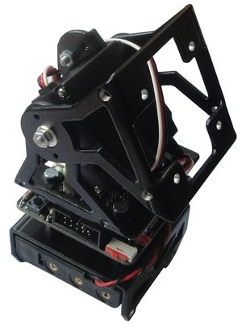
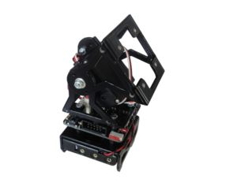
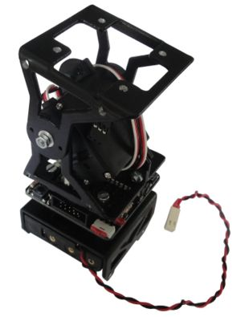
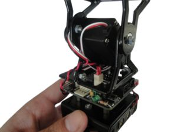
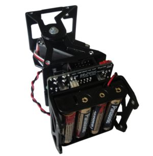
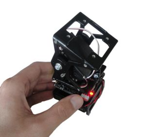

Unimod type B1 (click to enlarge)
Contenido
[ocultar]Introduction
Unimod is the minimal module capable of oscillating autonomously. To assembly it the following parts are needed:
- One MY1 module fully assembled (Assembly instructions)
- One Skycube board
- One flat battery pack for 4 AAA batteries ready to use (Instructions)
- The part D
- 4 male/female spacers. Size M3, length 12mm
- 4 spacers (female/female). size M3, length 10mm
- 8 M3 bolts. Length: 6mm
- 2 M3 falt head bolts. Length: 8mm.
- 2 M3 nuts
 Beginning: Parts needed to mount one UNIMOD type B1 (Click to enlarge) |
 End: One Unimod type B1 finished (Click to enlarge) |

Assembling
| |
Steps 0-3: The same than for the Unimod A1
The step from 0 to 3 are exactly the same than for assembling Unimod type A1:
- Step 0: Remove the paint from the inside of the Part B drill (Optional)
- Step 1: Place the male/female spacers in part D
- Step 2: Screw the_battery pack to the part D
- Step 3: Screw the Skycube board to the part D
Step 4: Screw the MY1 module to the Skycube board
| |
 Skycube board screwed both to part D and to the battery pack, one MY1 module and 4 bolts (Click to enlarge) |
 MY1 module on top of Skycube. Respect the same orientation shown in the picture! (Click to enlarge) |
|  Screw the module to the Skycube board (Click to enlarge) |

Step 5: Connect the servo and the power supply
- Connect the servo to the Skycube board to any of the 3-pin headers available (corresponding to servos number 2, 4, 6 or 8). The black wire should be pointing towards the red power switch.
 Unimod with the servo connected (Click to enlarge) |
 Unimod, with the power supply connected (Click to enlarge) |

Paso 6: Install the batteries
- Finally, place the 4 AAA batteries in the battery pack. Turn on Unimod to test the power supply connection. The red led should be on.
|  Unimod with the 4 AAA batteries installed (Click to enlarge) |
 Unimod is on (Click to enlarge) |


Pictures
| Photo album |
Links
News
- 23/Feb/2011: This page is created